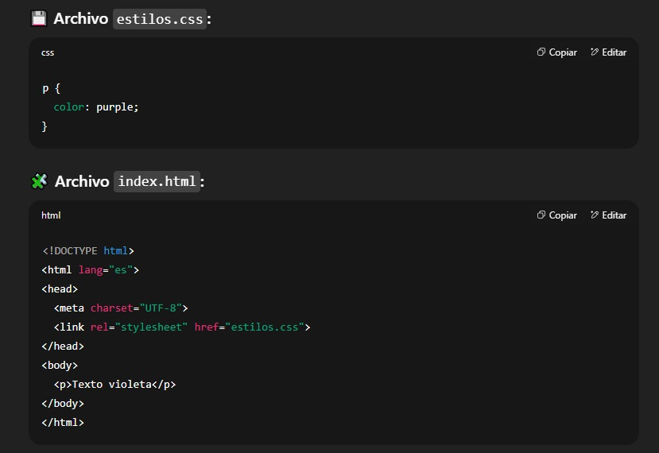

Hola Mundo!
Esta es una prueba para comprobar un simple cambio de color en css de forma externa
Puse todo el texto en rojo.
Asi que debería verse de esa forma ¿o no?
Y para que no quede muy aburrido voy a ponerle alguna boludez mas...
Asi es como se ve el codigo de ejemplo:

Podes pedirle a ChatGPT que te haga un codigo similar si le preguntas aqui:
Ir a ChatGPT
Podes pedirle cosas como:
- pedirle que te explique como funciona
- que te explique las diferencias entre uno interno y externo ademas de el inline
- y finalmente que te haga un codigo de prueba para que puedas practicar